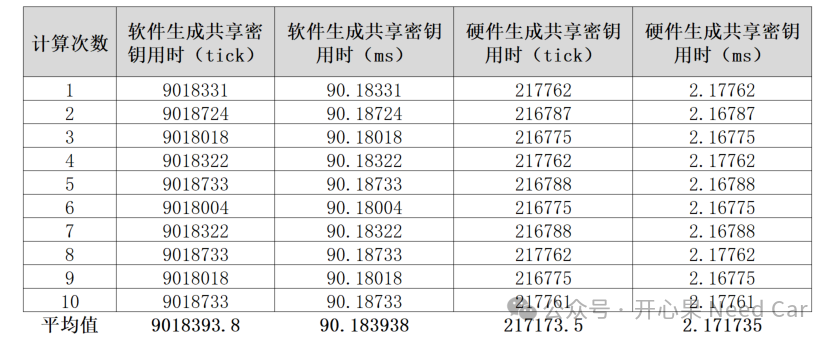
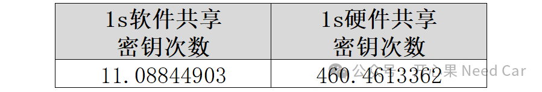

开心果 Need Car · 2025-02-18T06:36:00+08:00 · 微信原文
信息安全的议题里，不乏性能的讨论。前文《信息安全：密钥交换之X25519》讨论了基于X25519的密钥交换原理及实现细节，本文进一步讨论密钥共享的性能。本文，两个方式实现X25519的密钥共享功能，即：软件实现和硬件实现。


如上统计可以看出：
相比于软件，硬件生成共享密钥的性能更优
结合实际工程，基于X25519生成共享密钥的时间应当尽可能的短，以便于后续的安全通信快速建立。所以，基于本文提到的平台，生成共享密钥的次数可以设定为≥400次/s。
注意，基于ECDH（Elliptic Curve Diffie - Hellman）的密钥交换协议，双方使用的私钥是固定的。而且这些私钥会在一段时间内持续使用，如此就会造成这样一个问题：如果私钥泄露，之前所有基于该私钥交换的信息都会被破解。也就是说，ECDH不具有前向安全性，如何理解前向安全性呢？如果一个私钥在某个时间点被泄露，那么，之前利用该私钥保护的内容将会被破解，这就是前向内容的不安全性。
所以，这也就延申出了ECDHE（Elliptic Curve Ephemeral Diffie - Hellman），ECDHE使用临时的、一次性的私钥。每次进行密钥交换时，双方都会生成新的临时私钥。即使某次密钥交换过程被第三方攻破，攻击者获取了临时私钥，由于私钥是一次性的，不会影响到其他会话的安全性。
你的项目中，基于X25519生成共享密钥的性能又是怎样的呢？欢迎评论区留言交流。
往期精彩回顾